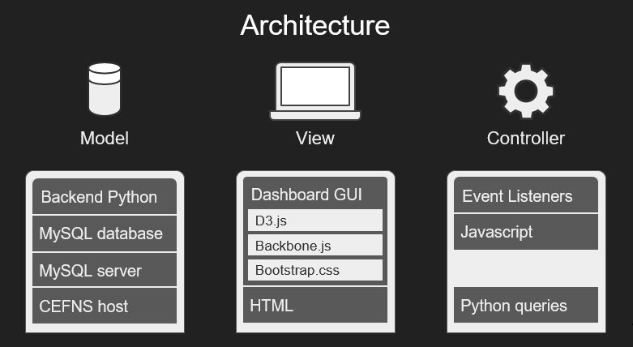

Design and Concept
|  |
We used a Model View Controller architecture to build the core components of our system. Models define visualization types and data storage. Views define elements of the graphical user interface, supported by styling and control features. Controllers are the “brains of the system,” directing the flow of the application and responding to user input and events. This specific architecture was ultimately chosen due to the fact that it allowed us to create an application that was highly modular. That is to say, we wanted to be able to create visuals that were independent of any data set. No matter how the data set would change in the future, the visuals that we created would still work properly. Using an MVC approach we were able to separate many components of the system. In one case we separated how the data was grabbed for the visualizations and in another we modularized the components of the dashboard itself; this further allowed us to interchange new visuals that were developed without creating a dependency on any one component of the system. Ultimately separating components of the application was a key part of this project and as such the MVC architecture was the best choice to complete this project.